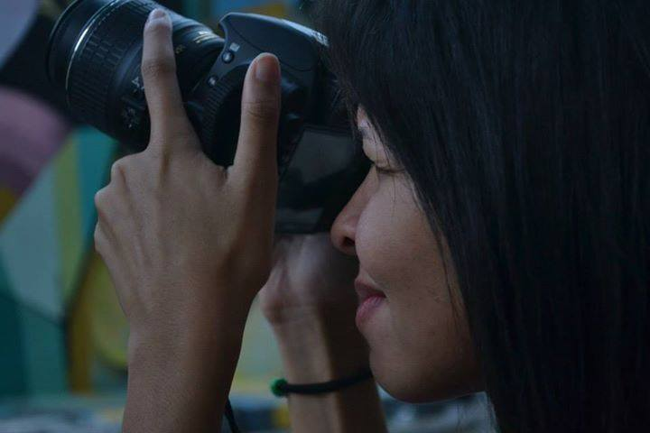

Funções / Cenografia
As informações de cada perfil são de responsabilidade das profissionais.
Você quer conhecer profissionais de quais estados?
Marcar/Desmarcar todos
CARREGANDO ...
 Eliza Neves da Luz (RJ)
Eliza Neves da Luz (RJ)
Eliza Neves da Luz
33 anos | Rio de Janeiro (RJ)
elizaneves@gmail.com
Estou iniciando agora na área do audiovisual e descobri que esta é a minha verdadeira paixão. Acabei de finalizar o primeiro curso de produção audiovisual e a única experiência que consegui até agora foi uma oportunidade de figurinista. Sou formada em jornalismo há 5 anos e atuo nesta área há sete anos. Porém, estou desempregada há 8 meses e por isso resolvi seguir uma nova carreira, entrando assim para o mundo audiovisual.
Outras atividades de Eliza Neves da Luz
Figurino |
Preparação de elenco |
Produção
Amostra de vídeo
 Erica Ribeiro (SP)
Erica Ribeiro (SP)
Erica Ribeiro
29 anos | São Paulo (SP)
eraribeiro@gmail.com
Artísta multifuncional.
http://eraribeiro.blogspot.com
Outras atividades de Erica Ribeiro
Atuação |
Direção de Arte |
Dublagem |
Figurino |
Locução |
Maquiagem |
Oficinas e cursos livres |
Preparação de Elenco
Amostra de vídeo
 Kelly Castilho (SP)
Kelly Castilho (SP)
Kelly Castilho
São Paulo (SP)
kelly@estudioconfeitaria.com.br
Há 21 anos no mercado de filmes publicitários e cinematográficos Kelly Castilho trabalha com produtoras como a O2 Filmes, lá iniciou sua carreira, além de outras. Atuou como produtora de figurino, de objetos e ass. de Direção de Arte. Se especializou em arquitetura, moda e cinema, para seguir em busca do conhecimento para atuar como Diretora de Arte. Um dos trabalhos pelo qual tem muito carinho no cinema é Carolina de Jeferson De. Como é versátil fez diferentes projetos como um Doc para Ecodocs AG da Suiça e programas de TV para a Eyeworks Cuatro Cabezas da Argentina. Além disso fala 5 idiomas, sendo 4 deles fluentemente ( português, inglês, espanhol e italiano) e alemão.
https://vimeo.com/confeitaria
Outras atividades de Kelly Castilho
Direção |
Direção de Arte
Amostra de vídeo
 Lia Letícia (PE)
Lia Letícia (PE)
Lia Letícia
41 anos | Recife (PE)
lia.leticia@gmail.com
Além de escrever e dirigir seus próprios filmes, trabalha como diretora de arte. É educadora no projeto de educação audiovisual para crianças Escola Engenho e no Tardes de Quintal/Recife. Também é curadora e coordena o Cinecão, plataforma de exibição de trabalhos hibrídos em audiovisual, além de projetos independentes de arte na Maumau|Recife.
https://www.youtube.com/channel/UC3V5nfblgaqKdKy-XZj3ymA?view_as=public
Outras atividades de Lia Letícia
Cineclubismo |
Coordenação de projeto |
Direção |
Direção de arte |
Edição |
Figurino |
Oficinas e cursos livres
|
Pesquisa e desenvolvimento |
Produção |
Programação e curadoria |
Roteiro
Amostra de vídeo
 Natalie Matos (MG)
Natalie Matos (MG)
Natalie Matos
21 anos | Belo Horizonte (MG)
natalie.m.moura@gmail.com
A única certeza que mora em mim é a de que a cada passo aprendo algo novo e construo minha identidade. Como uma árvore que cresce regada ao amor e às dificuldades, dá bons frutos e flores, mas também amadurece antes da hora e às vezes até mesmo cai, mas, sempre lembra que tudo que se vive fortalece suas raízes. E sempre quando eu precisar vou ao meu interior e discuto comigo, para entender esse meu eu que às vezes recusa falar e prefere apenas sentir. Gradua em Cinema e Audiovisual e Técnico em Artes Visuais, hoje tenho projetos de visibilidade ao protagonismo da mulher preta e a juventude periférica.
http://nataliem-moura.wixsite.com/nataliematos
Outras atividades de Natalie Matos
Animação |
Assistência de Direção |
Captação de Recursos |
Captação de Som |
Continuidade |
Correção de cor |
Direção |
Direção de Arte |
Direção de Fotografia |
Edição |
Fotografia Still |
Iluminação |
Mixagem e efeitos sonoros |
Pesquisa e desenvolvimento |
Preparação de Elenco |
Produção |
Roteiro
Amostra de vídeo
 Patrícia Bssa (BA)
Patrícia Bssa (BA)
Patrícia Bssa
33 anos | Salvador (BA)
patriciabssa@gmail.com
Bacharel em comunicação social e radialista, atua na coordenação e produção de arte e cenografia. Outras experiências em audiovisual: gestão financeira, contratação de fornecedores e serviços, logística, cattering, receptivo, produção de elenco, e produção de locação.
http://patriciabssa.tumblr.com/
Outras atividades de Patrícia Bssa
Coordenação de Projeto |
Direção de Arte
|
Produção |
Produção Executiva
Amostra de vídeo
 Thuanny Bruno Rodrigues Paes (SC)
Thuanny Bruno Rodrigues Paes (SC)
Thuanny Bruno Rodrigues Paes
22 anos | Florianópolis (SC)
thuannypaess@gmail.com
Thuanny Paes é atriz, militante e estudante cotista do curso de Licenciatura em Teatro da Universidade do Estado de Santa Catarina (UDESC). Entrou no então projeto de extensão Coletivo NEGA onde participou como bolsista por dois anos. Hoje é atriz e produtora do grupo que está no quinto consecutivo apresentando a performance Preta-à-Port Preta-à-Porter. e atua no projeto Diversidade em Escolas Públicas e EJAS nas redes municipais de São José São José e é menbro do MNU Jovem (Movimento Negro Unificado). Esse ano criou um canal no youtube pra falar sobre Cultura e Arte Negra e e pesquisa de forma livre as áreas de direção e roteiro audiovisual.
Outras atividades de Thuanny Bruno Rodrigues Paes
Captação de recursos |
Coordenação de projeto |
Direção
|
Direção de arte |
Dublagem |
Figurino |
Preparação de elenco |
Produção executiva |
Roteiro
Waleska Brito Silva Santos (SP)
Waleska Brito Silva Santos
23 anos | São Paulo (SP)
waleska.bbrito@gmail.com
Sou recém formada pela Universidade Metodista de São Paulo, sou bacharel em comunicação social com ênfase em Rádio, TV e Internet. Possuo experiência em produção e edição. Trabalhei para a Somos Educação (antiga Abril Educação) da qual fiz parte do projeto Apprendi! que visa conteúdo audiovisual para escolas do país inteiro. Como trabalhos acadêmicos já realizei edição e direção de arte.